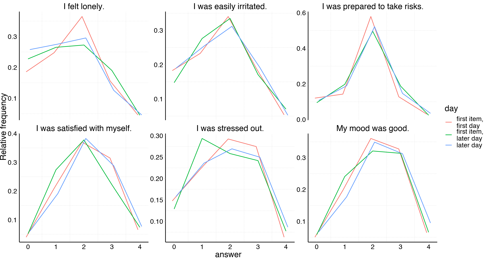
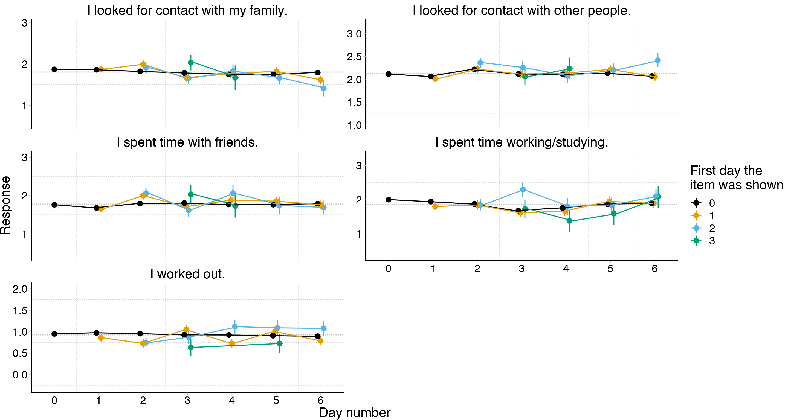
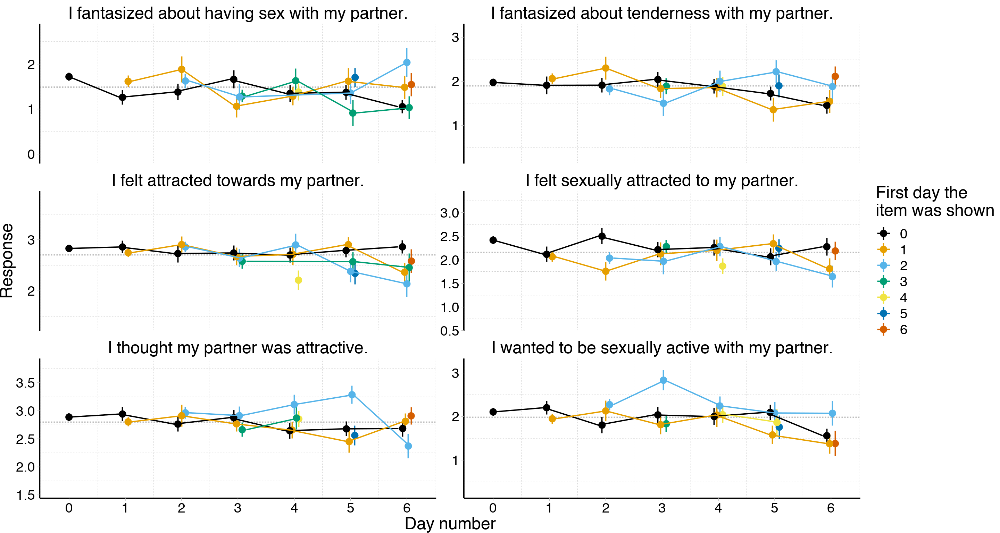

Table of Contents
Replicating and extending Shrout et al. (2017), amending their recommendations.
Authors: Ruben C. Arslan, Anne C. Reitz, Julie Driebe, Tanja Gerlach, & Lars Penke.
Description
Demographics
| type | variable | missing | complete | n | mean | sd | p0 | p25 | p50 | p75 | p100 | hist |
|---|---|---|---|---|---|---|---|---|---|---|---|---|
| integer | days | 0 | 1257 | 1257 | 44.93 | 22.47 | 1 | 26 | 53 | 64 | 71 | ▃▂▂▂▂▃▅▇ |
| type | variable | missing | complete | n | mean | sd | p0 | p25 | p50 | p75 | p100 | hist |
|---|---|---|---|---|---|---|---|---|---|---|---|---|
| numeric | age | 0 | 1257 | 1257 | 26.68 | 7.33 | 18 | 22 | 25 | 29 | 61 | ▇▇▃▁▁▁▁▁ |
| numeric | education_years | 0 | 1257 | 1257 | 15.21 | 4.77 | 0 | 13 | 16 | 18 | 26 | ▁▁▁▅▇▇▂▁ |
| numeric | has_children | 0 | 1257 | 1257 | 0.12 | 0.33 | 0 | 0 | 0 | 0 | 1 | ▇▁▁▁▁▁▁▁ |
| numeric | hetero_relationship | 0 | 1257 | 1257 | 0.68 | 0.47 | 0 | 0 | 1 | 1 | 1 | ▃▁▁▁▁▁▁▇ |
| numeric | nr_children | 1106 | 151 | 1257 | 1.7 | 0.77 | 1 | 1 | 2 | 2 | 5 | ▇▇▁▂▁▁▁▁ |
| occupational_status | Freq |
|---|---|
| employed, intern | 0.00 |
| homemaker, employed | 0.00 |
| intern | 0.00 |
| not_working, employed | 0.00 |
| not_working, homemaker | 0.00 |
| not_working, intern | 0.00 |
| not_working, student | 0.00 |
| pupil, student | 0.00 |
| student, employed, intern | 0.00 |
| student, homemaker | 0.00 |
| student, homemaker, employed | 0.00 |
| trainee, employed | 0.00 |
| trainee, homemaker, employed | 0.00 |
| trainee, student | 0.00 |
| homemaker | 0.01 |
| pupil | 0.01 |
| student, intern | 0.01 |
| not_working | 0.02 |
| trainee | 0.02 |
| student, employed | 0.03 |
| employed | 0.27 |
| student | 0.60 |
occupational_status %contains% "student"
FALSE TRUE
0.35 0.65
occupational_status %contains% "employed"
TRUE FALSE
0.31 0.69
haven::as_factor(relationship_status)
Item was never rendered for this user.
0.00
andere
0.01
verlobt
0.02
lose Beziehung
0.06
verheiratet
0.10
Single
0.31
feste Partnerschaft
0.50 
Diary
The following items were shown in random order on the first page of our diary.
- I was stressed. (40% probability of being shown)
- I was lonely. (40%)
- My mood was good. (80%)
- I was prepared to take risks. (20%)
- I was satisfied with myself. (80%)
- I was irritable. (40%)
Participants (n=1257 women) could answer on a 5 point likert scale from “less than usual” to “more than usual”. Pole labels were placed left and right of blank, equally sized buttons. Because of our planned missing design with randomised display and order, participants saw only a subset of these items each day. Therefore, the following were randomised variables - the day an item was first shown (conditional on adjusting for day number), - the number of times an item was seen previously (conditional as above). - the number of items on that day. - the display order.
We did not randomise the start date of the entire diary. So, the key difference to Shrout et al. is that we cannot tell apart causal effects of the first day of the diary from e.g. selection effects, but we can disentangle the day people first respond to the diary from the day people first respond to the item, which Shrout et al. could not. We can estimate the difference between the first diary day and later days, but this difference might be exacerbated or reduced via selection effects.
We estimate smaller first day of item effects than Shrout et al. report. This may be
- because the initial elevation bias is concentrated on the diary level (as may be speculated based on our correlative results for loneliness) or
- because the bias is smaller for our items, sample, and assessment procedure, or
- because in a slightly ironic turn of events Shrout et al.’s results are suspected to the science version of initial elevation bias, i.e. winner’s curse, where the significance filter by publication results in inital overestimates of scientific effects.
Because of the randomisation, selection should play no role. However, in longitudinal studies and indeed in Shrout et al.’s study and our own, incomplete data is common. If dissatisfied individuals are more likely to discontinue the study, we might also see an initial elevation in dissatisfaction. Therefore, we test all effects both only on people who did not miss a day during the first week and including people who missed days.
Cohen’s d estimates were obtained by calculating the mean within-subject change and dividing it by the pooled between-subject SD.
Since our between-subject SDs are all around 1 and these biases are likely to be relative to the Likert scale used, we don’t do this.
# A tibble: 6 x 5
label_english mean sd n pct_shown
<chr> <dbl> <dbl> <int> <dbl>
1 I felt lonely. 1.40 1.14 22695 0.4
2 I was easily irritated. 1.61 1.12 22763 0.4
3 I was prepared to take risks. 1.79 0.951 11364 0.2
4 I was satisfied with myself. 2.11 0.970 45545 0.8
5 I was stressed out. 1.81 1.18 22736 0.4
6 My mood was good. 2.19 1.02 45534 0.8| item_name | label_english | choices | women | days | per_woman | mean | sd | pct_shown |
|---|---|---|---|---|---|---|---|---|
| good_mood | My mood was good. | 0=0: weniger als sonst,1=1,2=2,3=3,4=4: mehr als sonst | 1250 | 45534 | 36 | 2.19 | 1.02 | 0.8 |
| irritable | I was easily irritated. | 0=0: weniger als sonst,1=1,2=2,3=3,4=4: mehr als sonst | 1209 | 22763 | 19 | 1.61 | 1.12 | 0.4 |
| loneliness | I felt lonely. | 0=0: weniger als sonst,1=1,2=2,3=3,4=4: mehr als sonst | 1214 | 22695 | 19 | 1.40 | 1.14 | 0.4 |
| risk_taking | I was prepared to take risks. | 0=0: weniger als sonst,1=1,2=2,3=3,4=4: mehr als sonst | 1180 | 11364 | 10 | 1.79 | 0.95 | 0.2 |
| self_esteem | I was satisfied with myself. | 0=0: weniger als sonst,1=1,2=2,3=3,4=4: mehr als sonst | 1248 | 45545 | 36 | 2.11 | 0.97 | 0.8 |
| stressed | I was stressed out. | 0=0: weniger als sonst,1=1,2=2,3=3,4=4: mehr als sonst | 1224 | 22736 | 19 | 1.81 | 1.18 | 0.4 |


Simple time series
Just a quick check that fluctuation in whether a question is asked is as random as intended over time. The Y axes include the global mean ± 1 global standard deviation for each item.

We showed above that responses do not drift much over time in the diary. But do participants learn to respond more quickly?

Time series by first day item shown
In this graph, we show mean response to the item, depending on which day of the diary we first asked it. Different-coloured lines reflect different starting days. We only show lines based on at least twenty participants to reduce noise. Therefore, fewer lines are shown for items with a higher probability of being shown. Wherever the initial point of each line exceeds the mean of the other lines on the day, this would be evidence for initial elevation bias.
In this graph, we show the first week. The Y axes include the global mean ± 1 global standard deviation for each item.

Here, we also show combinations with fewer than 20 participants.

Here, we move away from the time series display to more clearly aggregate the evidence across starting days. An initial elevation bias would show, when both items show for the first time on later days and items shown for the first time on the first day of the diary get elevated responses compared to later days. It is additionally possible that first days of the diary show additional elevation owing to selection biases (e.g., participants being more likely to enrol when lonely).

A response bias to a Likert scale may not only affect the mean response, but also the dispersion or the propensity to choose the middle or extreme categories. Such biases would balance out and not show up in the mean response. We therefore compute the relative frequency of certain responses for first days and later days.
Days on which the item is first shown have very similar frequencies as later days.

We can additionally examine whether responses slow down when items are first shown. We only examine the response time relative to the answer to the previous item here. This means the first item is excluded from consideration. We do this, because responses relative to the time the page loaded are strongly biased upwards through participants who clicked the link and did something else until the page loaded, or participants who first familiarise themselves with all items. Responses to the first item take almost 8000ms, much longer than responses to later items. The line shows the 10% trimmed means, the points show means plus standard errors. We excluded responses that were made out of order (negative response times relative to the previous item), and responses that took longer than 30 seconds.

Switching to the time series view somewhat clutters the display.

Time series by first day item shown (complete 1st week)
Here, only with those who didn’t miss a day in the first week (ruling out selective dropout as an explanation). Patterns seem unchanged.


Item order
The item order on each page was randomised too. If the mechanism for initial elevation bias involves familiarity with the response scale, we might expect to find that the first item on the first page on the first day is answered differently than later responses. Different mechanisms of response bias (e.g., amount of mouse movement required to reply is equal for all responses for the first item, but reduced for unchanged responses to lower down items) could lead to different response biases according to item order.
Item order is confounded with another randomised variable, namely the number of items shown on each page. For example, an item order of six only occurs when all six items were shown.

As above, we can not only examine the mean but also the relative frequencies of each response.
Again, we can also examine the response time to each item according to item order.

Number of items shown
As mentioned above, the number of items shown is also a randomised variable. It is in turn confounded with item order, because items shown on a page with more items are likely to have a later item order. Most importantly, when only one item is shown, item order is also one.
As above, we can not only examine the mean but also the relative frequencies of each response.

Again, we can also examine the response time to each item according to item order.

Last item
Given that item order is randomised, it seems fruitful to examine whether the previous question biases the next. This would be a potential mechanism for item order effects. Some differences are apparent, though minute,

It is not possible to infer whether the item content would bias the next response (i.e., a reminder of stress truly lowers mood) or whether these are the function of participants minimising “mousework” (i.e., after responding 4 to one item, it is slightly less effort to answer 4 for the next item too than to choose a different response, and certain items elicit higher mean responses).
We can exclude people who gave the same response to items as a robustness check. Of course, giving the same response to all items is not that unlikely when only two items were asked, and it is entirely possible for straightline response to be legitimate (even if they exceed the nominal probability expected if responses were independent, they may be more frequent on very quotidian days in a way that is difficult to model). Still, as a robustness check it will do.
| number_of_items_shown | mean | expected_if_independent |
|---|---|---|
| 1 | NaN | 0.9900 |
| 2 | 0.4050 | 0.2459 |
| 3 | 0.1332 | 0.0702 |
| 4 | 0.0664 | 0.0218 |
| 5 | 0.0503 | 0.0071 |
| 6 | 0.0306 | 0.0024 |
As above, we can not only examine the mean but also the relative frequencies of each response.
Multilevel analysis
We have investigated each randomised variable in turn, but we also noted that item order and number of items shown are confounded with one another. In addition, the first day an item is shown is likely to be an earlier day of the diary, where we might expect to see selection bias. Further, we varied the instructions in the diary depending on how long ago the last diary was answered. We instructed participants to refer to the time period since their last diary entry, if that had happened within the last 24 hours, or to the last 24 hours, if the last diary entry was longer ago (and if it was their first diary entry).
In addition, a more generalised understanding of the initial elevation bias might lead us to believe that responses are continuously elevated more, the fewer times an item has been shown.
A natural way to disentangle these confounds is to simultaneously enter them into a regression. We fit multilevel regression per item in lme4.
Basic model
Here, we are adjusting for day number (0 to 7+, larger numbers are binned because covariates can no longer be isolated) and the time period referred to. We also enter a random effect for which day the item was first shown, and the participant.

All randomised exposures
We have three randomised variables:
- display order
- number of items shown
- the times the item was seen already (reference category: first day)
- last item
We adjust for day number (0 to 7+), the time period referred to (confounded with how often people have responded so far), random effects for the participant

Is there evidence for an additional bias of the last item identity? We test this separately because item order 1 and last item “none” are identical, and estimates become less precise because of similar, less severe multicollinearity.
| response | Df | AIC | BIC | logLik | deviance | Chisq | Chi Df | Pr(>Chisq) |
|---|---|---|---|---|---|---|---|---|
| good_mood | 27 | 127838 | 128073 | -63892 | 127784 | NA | NA | NA |
| good_mood | 31 | 127839 | 128109 | -63888 | 127777 | 6.562 | 4 | 0.1610 |
| irritable | 27 | 67851 | 68068 | -33898 | 67797 | NA | NA | NA |
| irritable | 31 | 67848 | 68097 | -33893 | 67786 | 10.544 | 4 | 0.0322 |
| loneliness | 27 | 67917 | 68133 | -33931 | 67863 | NA | NA | NA |
| loneliness | 32 | 67915 | 68171 | -33925 | 67851 | 12.029 | 5 | 0.0344 |
| risk_taking | 27 | 29899 | 30097 | -14922 | 29845 | NA | NA | NA |
| risk_taking | 31 | 29896 | 30124 | -14917 | 29834 | 10.175 | 4 | 0.0376 |
| self_esteem | 27 | 120817 | 121052 | -60381 | 120763 | NA | NA | NA |
| self_esteem | 32 | 120809 | 121088 | -60373 | 120745 | 17.716 | 5 | 0.0033 |
| stressed | 27 | 70371 | 70588 | -35159 | 70317 | NA | NA | NA |
| stressed | 32 | 70375 | 70632 | -35155 | 70311 | 6.300 | 5 | 0.2781 |
How much do our variables change when we residualise for all of these biases?
| variable | cor |
|---|---|
| risk_taking | 0.9965 |
| loneliness | 0.9975 |
| self_esteem | 0.9985 |
| irritable | 0.9988 |
| stressed | 0.9989 |
| good_mood | 0.9990 |
Not much at all.
Allow individual differences in biases
Here, we additionally residualise the item response for inter-individual person-level intercepts and then see whether further residualising for the average biases and person-level varying biases makes a large difference. It does not. In this model, only display order, number of items shown, and times item answered are adjusted for continuously, or the number of random effects would exceed the number of rows.
| variable | cor |
|---|---|
| self_esteem | 0.0128 |
| good_mood | 0.0138 |
| loneliness | 0.0295 |
| irritable | 0.0337 |
| stressed | 0.0379 |
| risk_taking | 0.0588 |
Regression table
Continuous predictors
How much do our variables change when we residualise for all of these biases?
| variable | cor |
|---|---|
| risk_taking | 0.9971 |
| self_esteem | 0.9986 |
| loneliness | 0.9988 |
| stressed | 0.9991 |
| good_mood | 0.9992 |
| irritable | 0.9992 |
Regression table
Response time: Multilevel models
Continuous items shown model
Testing the times the item was seen already (reference category: first day) as a factor variable, rather than yes/no.
adjusting for day number (0 to 7+), the time period referred to (affected by how often people have responded so far), random effects for which day the item was first shown, the day number, the user.

Regression table
Other items
We focused on the most general items on the first page of our study. However, the diary also contained randomised (in order and odds of appearing) items about sexual desire, time use, and partner jealousy, among others. We show that the overall results (that residualising for estimated biases has negligible effects) holds here too, even though the partner jealousy items were asked on a response scale from “not at all” to “very much”, the desire items on a scale of “very inaccurate” to “very accurate”, and the time use items on the same “less than usual” to “more than usual” scale as the items on the first page.
Time items
On a “less than usual” to “more than usual” response scale.
| item_name | label_english | choices | women | days |
|---|---|---|---|---|
| time_family | I looked for contact with my family. | 0=0: weniger als sonst,1=1,2=2,3=3,4=4: mehr als sonst | 1240 | 39818 |
| time_friends | I spent time with friends. | 0=0: weniger als sonst,1=1,2=2,3=3,4=4: mehr als sonst | 1246 | 39947 |
| time_people | I looked for contact with other people. | 0=0: weniger als sonst,1=1,2=2,3=3,4=4: mehr als sonst | 1245 | 39904 |
| time_sports | I worked out. | 0=0: überhaupt nicht,1=1,2=2,3=3,4=4: sehr viel | 1251 | 39717 |
| time_work_uni | I spent time working/studying. | 0=0: überhaupt nicht,1=1,2=2,3=3,4=4: sehr viel | 1242 | 39631 |

How much do our variables change when we residualise for all of these biases?
| variable | cor |
|---|---|
| time_people | 0.9961 |
| time_friends | 0.9966 |
| time_work_uni | 0.9977 |
| time_sports | 0.9988 |
| time_family | 0.9990 |
Desire items
On a “very inaccurate” to “very accurate” response scale.
| item_name | label_english | choices | women | days |
|---|---|---|---|---|
| in_pair_desire_10 | I felt sexually attracted to my partner. | 0=0: stimmt nicht,1=1,2=2,3=3,4=4: stimmt genau | 816 | 11620 |
| in_pair_desire_11 | I wanted to be sexually active with my partner. | 0=0: stimmt nicht,1=1,2=2,3=3,4=4: stimmt genau | 817 | 11502 |
| in_pair_desire_13 | I fantasized about tenderness with my partner. | 0=0: stimmt nicht,1=1,2=2,3=3,4=4: stimmt genau | 820 | 11550 |
| in_pair_desire_14 | I fantasized about having sex with my partner. | 0=0: stimmt nicht,1=1,2=2,3=3,4=4: stimmt genau | 823 | 11509 |
| in_pair_desire_7 | I felt attracted towards my partner. | 0=0: stimmt nicht,1=1,2=2,3=3,4=4: stimmt genau | 816 | 11557 |
| in_pair_desire_8 | I thought my partner was attractive. | 0=0: stimmt nicht,1=1,2=2,3=3,4=4: stimmt genau | 820 | 11684 |


How much do our variables change when we residualise for all of these biases?
| item | cor |
|---|---|
| in_pair_desire_11 | 0.9947 |
| in_pair_desire_13 | 0.9961 |
| in_pair_desire_10 | 0.9966 |
| in_pair_desire_7 | 0.9968 |
| in_pair_desire_14 | 0.9972 |
| in_pair_desire_8 | 0.9976 |
Retention items
On a “not at all” to “very much” response scale.
| item_name | label_english | choices | women | days |
|---|---|---|---|---|
| mate_retention1 | My partner was clingy. | 0=0: überhaupt nicht,1=1,2=2,3=3,4=4: sehr viel | 822 | 11717 |
| mate_retention2 | My partner was jealous. | 0=0: überhaupt nicht,1=1,2=2,3=3,4=4: sehr viel | 816 | 11557 |
| mate_retention3 | My partner was possessive. | 0=0: überhaupt nicht,1=1,2=2,3=3,4=4: sehr viel | 819 | 11554 |
How much do our variables change when we residualise for all of these biases?
| item | cor |
|---|---|
| mate_retention1 | 0.9924 |
| mate_retention2 | 0.9970 |
| mate_retention3 | 0.9983 |